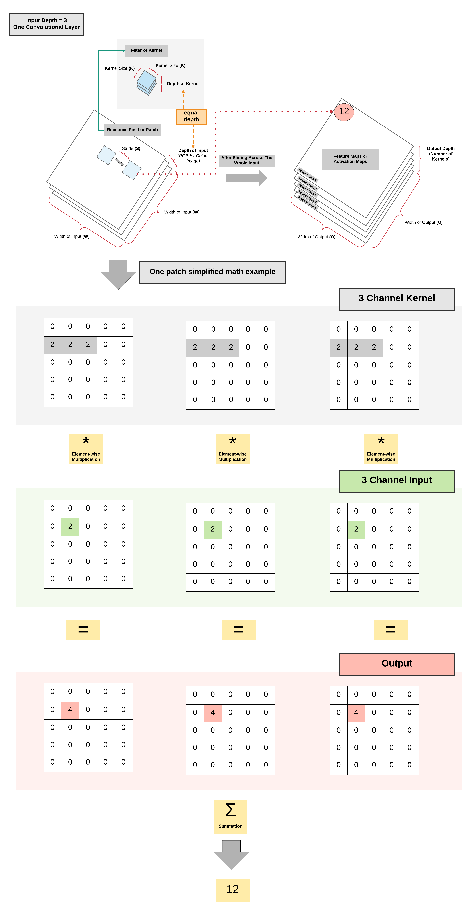
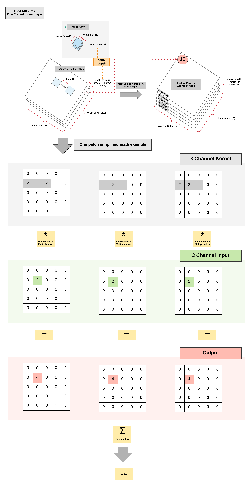
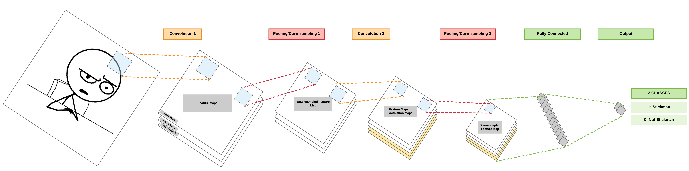
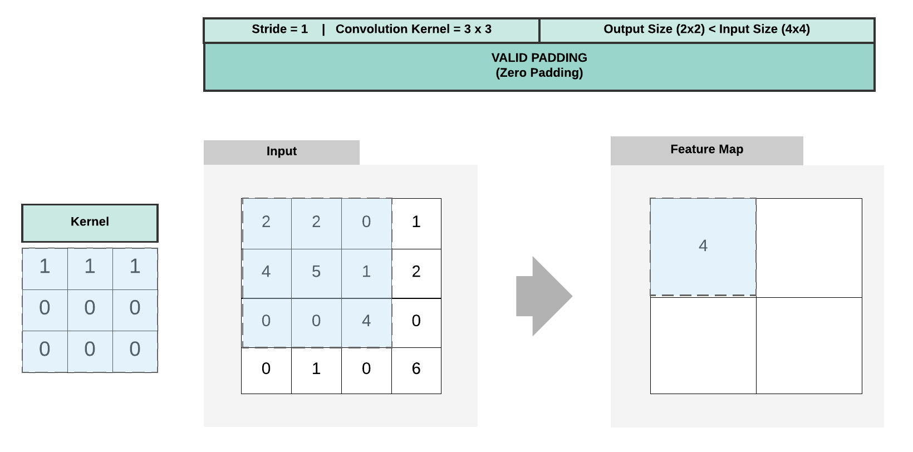

Convolutional Neural Network with PyTorch¶
About Convolutional Neural Network¶
Transition From Feedforward Neural Network¶
Hidden Layer Feedforward Neural Network¶
Recap of FNN
So let's do a recap of what we covered in the Feedforward Neural Network (FNN) section using a simple FNN with 1 hidden layer (a pair of affine function and non-linear function)
- [Yellow box] Pass input into an affine function \boldsymbol{y} = A\boldsymbol{x} + \boldsymbol{b}
- [Pink box] Pass logits to non-linear function, for example sigmoid, tanh (hyperbolic tangent), ReLU, or LeakyReLU
- [Blue box] Pass output of non-linear function to another affine function
- [Red box] Pass output of final affine function to softmax function to get our probability distribution over K classes
- [Purple box] Finally we can get our loss by using our cross entropy function

Basic Convolutional Neural Network (CNN)¶
- A basic CNN just requires 2 additional layers!
- Convolution and pooling layers before our feedforward neural network
Fully Connected (FC) Layer
A layer with an affine function & non-linear function is called a Fully Connected (FC) layer

One Convolutional Layer: High Level View¶
   


One Convolutional Layer: High Level View Summary¶
- As the kernel is sliding/convolving across the image \rightarrow 2 operations done per patch
- Element-wise multiplication
- Summation
- More kernels = more feature map channels
- Can capture more information about the input
Multiple Convolutional Layers: High Level View¶

Pooling Layer: High Level View¶
- 2 Common Types
- Max Pooling
- Average Pooling

Multiple Pooling Layers: High Level View¶
Padding¶

Padding Summary¶
- Valid Padding (No Padding)
- Output size < Input Size
- Same Padding (Zero Padding)
- Output size = Input Size
Dimension Calculations¶
- O = \frac {W - K + 2P}{S} + 1
- O: output height/length
- W: input height/length
- K: filter size (kernel size)
- P: padding
- P = \frac{K - 1}{2}
- S: stride
Example 1: Output Dimension Calculation for Valid Padding¶

- W = 4
- K = 3
- P = 0
- S = 1
- O = \frac {4 - 3 + 2*0}{1} + 1 = \frac {1}{1} + 1 = 1 + 1 = 2
Example 2: Output Dimension Calculation for Same Padding¶

- W = 5
- K = 3
- P = \frac{3 - 1}{2} = \frac{2}{2} = 1
- S = 1
- O = \frac {5 - 3 + 2*1}{1} + 1 = \frac {4}{1} + 1 = 5
Building a Convolutional Neural Network with PyTorch¶
Model A:¶
- 2 Convolutional Layers
- Same Padding (same output size)
- 2 Max Pooling Layers
- 1 Fully Connected Layer

Steps¶
- Step 1: Load Dataset
- Step 2: Make Dataset Iterable
- Step 3: Create Model Class
- Step 4: Instantiate Model Class
- Step 5: Instantiate Loss Class
- Step 6: Instantiate Optimizer Class
- Step 7: Train Model
Step 1: Loading MNIST Train Dataset¶
Images from 1 to 9
MNIST Dataset and Size of Training Dataset (Excluding Labels)
import torch import torch.nn as nn import torchvision.transforms as transforms import torchvision.datasets as dsets
train_dataset = dsets.MNIST(root='./data', train=True, transform=transforms.ToTensor(), download=True) test_dataset = dsets.MNIST(root='./data', train=False, transform=transforms.ToTensor())
print(train_dataset.train_data.size())
torch.Size([60000, 28, 28])
Size of our training dataset labels
print(train_dataset.train_labels.size())
torch.Size([60000])
Size of our testing dataset (excluding labels)
print(test_dataset.test_data.size())
torch.Size([10000, 28, 28])
Size of our testing dataset labels
print(test_dataset.test_labels.size())
torch.Size([10000])
Step 2: Make Dataset Iterable¶
Load Dataset into Dataloader
batch_size = 100 n_iters = 3000 num_epochs = n_iters / (len(train_dataset) / batch_size) num_epochs = int(num_epochs) train_loader = torch.utils.data.DataLoader(dataset=train_dataset, batch_size=batch_size, shuffle=True) test_loader = torch.utils.data.DataLoader(dataset=test_dataset, batch_size=batch_size, shuffle=False)
Step 3: Create Model Class¶
Output Formula for Convolution¶
- O = \frac {W - K + 2P}{S} + 1
- O: output height/length
- W: input height/length
- K: filter size (kernel size) = 5
- P: same padding (non-zero)
- P = \frac{K - 1}{2} = \frac{5 - 1}{2} = 2
- S: stride = 1
Output Formula for Pooling¶
- O = \frac {W}{K}
- W: input height/width
- K: filter size = 2

Define our simple 2 convolutional layer CNN
class CNNModel(nn.Module): def __init__(self): super(CNNModel, self).__init__() # Convolution 1 self.cnn1 = nn.Conv2d(in_channels=1, out_channels=16, kernel_size=5, stride=1, padding=2) self.relu1 = nn.ReLU() # Max pool 1 self.maxpool1 = nn.MaxPool2d(kernel_size=2) # Convolution 2 self.cnn2 = nn.Conv2d(in_channels=16, out_channels=32, kernel_size=5, stride=1, padding=2) self.relu2 = nn.ReLU() # Max pool 2 self.maxpool2 = nn.MaxPool2d(kernel_size=2) # Fully connected 1 (readout) self.fc1 = nn.Linear(32 * 7 * 7, 10) def forward(self, x): # Convolution 1 out = self.cnn1(x) out = self.relu1(out) # Max pool 1 out = self.maxpool1(out) # Convolution 2 out = self.cnn2(out) out = self.relu2(out) # Max pool 2 out = self.maxpool2(out) # Resize # Original size: (100, 32, 7, 7) # out.size(0): 100 # New out size: (100, 32*7*7) out = out.view(out.size(0), -1) # Linear function (readout) out = self.fc1(out) return out
Step 4: Instantiate Model Class¶
Our model
model = CNNModel()
Step 5: Instantiate Loss Class¶
- Convolutional Neural Network: Cross Entropy Loss
- Feedforward Neural Network: Cross Entropy Loss
- Logistic Regression: Cross Entropy Loss
- Linear Regression: MSE
Our cross entropy loss
criterion = nn.CrossEntropyLoss()
Step 6: Instantiate Optimizer Class¶
- Simplified equation
- \theta = \theta - \eta \cdot \nabla_\theta
- \theta: parameters
- \eta: learning rate (how fast we want to learn)
- \nabla_\theta: parameters' gradients
- \theta = \theta - \eta \cdot \nabla_\theta
- Even simplier equation
parameters = parameters - learning_rate * parameters_gradients- At every iteration, we update our model's parameters
Optimizer
learning_rate = 0.01 optimizer = torch.optim.SGD(model.parameters(), lr=learning_rate)
Parameters In-Depth¶
Print model's parameter
print(model.parameters()) print(len(list(model.parameters()))) # Convolution 1: 16 Kernels print(list(model.parameters())[0].size()) # Convolution 1 Bias: 16 Kernels print(list(model.parameters())[1].size()) # Convolution 2: 32 Kernels with depth = 16 print(list(model.parameters())[2].size()) # Convolution 2 Bias: 32 Kernels with depth = 16 print(list(model.parameters())[3].size()) # Fully Connected Layer 1 print(list(model.parameters())[4].size()) # Fully Connected Layer Bias print(list(model.parameters())[5].size())
<generator object Module.parameters at 0x7f9864363c50> 6 torch.Size([16, 1, 5, 5]) torch.Size([16]) torch.Size([32, 16, 5, 5]) torch.Size([32]) torch.Size([10, 1568]) torch.Size([10])
Step 7: Train Model¶
- Process
- Convert inputs to tensors with gradient accumulation abilities
- CNN Input: (1, 28, 28)
- Feedforward NN Input: (1, 28*28)
- Clear gradient buffets
- Get output given inputs
- Get loss
- Get gradients w.r.t. parameters
- Update parameters using gradients
parameters = parameters - learning_rate * parameters_gradients
- REPEAT
- Convert inputs to tensors with gradient accumulation abilities
Model training
iter = 0 for epoch in range(num_epochs): for i, (images, labels) in enumerate(train_loader): # Load images images = images.requires_grad_() # Clear gradients w.r.t. parameters optimizer.zero_grad() # Forward pass to get output/logits outputs = model(images) # Calculate Loss: softmax --> cross entropy loss loss = criterion(outputs, labels) # Getting gradients w.r.t. parameters loss.backward() # Updating parameters optimizer.step() iter += 1 if iter % 500 == 0: # Calculate Accuracy correct = 0 total = 0 # Iterate through test dataset for images, labels in test_loader: # Load images images = images.requires_grad_() # Forward pass only to get logits/output outputs = model(images) # Get predictions from the maximum value _, predicted = torch.max(outputs.data, 1) # Total number of labels total += labels.size(0) # Total correct predictions correct += (predicted == labels).sum() accuracy = 100 * correct / total # Print Loss print('Iteration: {}. Loss: {}. Accuracy: {}'.format(iter, loss.item(), accuracy))
Iteration: 500. Loss: 0.43324267864227295. Accuracy: 90 Iteration: 1000. Loss: 0.2511480152606964. Accuracy: 92 Iteration: 1500. Loss: 0.13431282341480255. Accuracy: 94 Iteration: 2000. Loss: 0.11173319816589355. Accuracy: 95 Iteration: 2500. Loss: 0.06409914791584015. Accuracy: 96 Iteration: 3000. Loss: 0.14377528429031372. Accuracy: 96
Model B:¶
- 2 Convolutional Layers
- Same Padding (same output size)
- 2 Average Pooling Layers
- 1 Fully Connected Layer


Steps¶
- Step 1: Load Dataset
- Step 2: Make Dataset Iterable
- Step 3: Create Model Class
- Step 4: Instantiate Model Class
- Step 5: Instantiate Loss Class
- Step 6: Instantiate Optimizer Class
- Step 7: Train Model
2 Conv + 2 Average Pool + 1 FC (Zero Padding, Same Padding)
import torch import torch.nn as nn import torchvision.transforms as transforms import torchvision.datasets as dsets ''' STEP 1: LOADING DATASET ''' train_dataset = dsets.MNIST(root='./data', train=True, transform=transforms.ToTensor(), download=True) test_dataset = dsets.MNIST(root='./data', train=False, transform=transforms.ToTensor()) ''' STEP 2: MAKING DATASET ITERABLE ''' batch_size = 100 n_iters = 3000 num_epochs = n_iters / (len(train_dataset) / batch_size) num_epochs = int(num_epochs) train_loader = torch.utils.data.DataLoader(dataset=train_dataset, batch_size=batch_size, shuffle=True) test_loader = torch.utils.data.DataLoader(dataset=test_dataset, batch_size=batch_size, shuffle=False) ''' STEP 3: CREATE MODEL CLASS ''' class CNNModel(nn.Module): def __init__(self): super(CNNModel, self).__init__() # Convolution 1 self.cnn1 = nn.Conv2d(in_channels=1, out_channels=16, kernel_size=5, stride=1, padding=2) self.relu1 = nn.ReLU() # Average pool 1 self.avgpool1 = nn.AvgPool2d(kernel_size=2) # Convolution 2 self.cnn2 = nn.Conv2d(in_channels=16, out_channels=32, kernel_size=5, stride=1, padding=2) self.relu2 = nn.ReLU() # Average pool 2 self.avgpool2 = nn.AvgPool2d(kernel_size=2) # Fully connected 1 (readout) self.fc1 = nn.Linear(32 * 7 * 7, 10) def forward(self, x): # Convolution 1 out = self.cnn1(x) out = self.relu1(out) # Average pool 1 out = self.avgpool1(out) # Convolution 2 out = self.cnn2(out) out = self.relu2(out) # Max pool 2 out = self.avgpool2(out) # Resize # Original size: (100, 32, 7, 7) # out.size(0): 100 # New out size: (100, 32*7*7) out = out.view(out.size(0), -1) # Linear function (readout) out = self.fc1(out) return out ''' STEP 4: INSTANTIATE MODEL CLASS ''' model = CNNModel() ''' STEP 5: INSTANTIATE LOSS CLASS ''' criterion = nn.CrossEntropyLoss() ''' STEP 6: INSTANTIATE OPTIMIZER CLASS ''' learning_rate = 0.01 optimizer = torch.optim.SGD(model.parameters(), lr=learning_rate) ''' STEP 7: TRAIN THE MODEL ''' iter = 0 for epoch in range(num_epochs): for i, (images, labels) in enumerate(train_loader): # Load images as tensors with gradient accumulation abilities images = images.requires_grad_() # Clear gradients w.r.t. parameters optimizer.zero_grad() # Forward pass to get output/logits outputs = model(images) # Calculate Loss: softmax --> cross entropy loss loss = criterion(outputs, labels) # Getting gradients w.r.t. parameters loss.backward() # Updating parameters optimizer.step() iter += 1 if iter % 500 == 0: # Calculate Accuracy correct = 0 total = 0 # Iterate through test dataset for images, labels in test_loader: # Load images to tensors with gradient accumulation abilities images = images.requires_grad_() # Forward pass only to get logits/output outputs = model(images) # Get predictions from the maximum value _, predicted = torch.max(outputs.data, 1) # Total number of labels total += labels.size(0) # Total correct predictions correct += (predicted == labels).sum() accuracy = 100 * correct / total # Print Loss print('Iteration: {}. Loss: {}. Accuracy: {}'.format(iter, loss.item(), accuracy))
Iteration: 500. Loss: 0.6850348711013794. Accuracy: 85 Iteration: 1000. Loss: 0.36549052596092224. Accuracy: 88 Iteration: 1500. Loss: 0.31540098786354065. Accuracy: 89 Iteration: 2000. Loss: 0.3522164225578308. Accuracy: 90 Iteration: 2500. Loss: 0.2680729925632477. Accuracy: 91 Iteration: 3000. Loss: 0.26440390944480896. Accuracy: 92
Comparison of accuracies
It seems like average pooling test accuracy is less than the max pooling accuracy! Does this mean average pooling is better? This is not definitive and depends on a lot of factors including the model's architecture, seed (that affects random weight initialization) and more.
Model C:¶
- 2 Convolutional Layers
- Valid Padding (smaller output size)
- 2 Max Pooling Layers
- 1 Fully Connected Layer


Steps¶
- Step 1: Load Dataset
- Step 2: Make Dataset Iterable
- Step 3: Create Model Class
- Step 4: Instantiate Model Class
- Step 5: Instantiate Loss Class
- Step 6: Instantiate Optimizer Class
- Step 7: Train Model
2 Conv + 2 Max Pool + 1 FC (Valid Padding, No Padding)
import torch import torch.nn as nn import torchvision.transforms as transforms import torchvision.datasets as dsets ''' STEP 1: LOADING DATASET ''' train_dataset = dsets.MNIST(root='./data', train=True, transform=transforms.ToTensor(), download=True) test_dataset = dsets.MNIST(root='./data', train=False, transform=transforms.ToTensor()) ''' STEP 2: MAKING DATASET ITERABLE ''' batch_size = 100 n_iters = 3000 num_epochs = n_iters / (len(train_dataset) / batch_size) num_epochs = int(num_epochs) train_loader = torch.utils.data.DataLoader(dataset=train_dataset, batch_size=batch_size, shuffle=True) test_loader = torch.utils.data.DataLoader(dataset=test_dataset, batch_size=batch_size, shuffle=False) ''' STEP 3: CREATE MODEL CLASS ''' class CNNModel(nn.Module): def __init__(self): super(CNNModel, self).__init__() # Convolution 1 self.cnn1 = nn.Conv2d(in_channels=1, out_channels=16, kernel_size=5, stride=1, padding=0) self.relu1 = nn.ReLU() # Max pool 1 self.maxpool1 = nn.MaxPool2d(kernel_size=2) # Convolution 2 self.cnn2 = nn.Conv2d(in_channels=16, out_channels=32, kernel_size=5, stride=1, padding=0) self.relu2 = nn.ReLU() # Max pool 2 self.maxpool2 = nn.MaxPool2d(kernel_size=2) # Fully connected 1 (readout) self.fc1 = nn.Linear(32 * 4 * 4, 10) def forward(self, x): # Convolution 1 out = self.cnn1(x) out = self.relu1(out) # Max pool 1 out = self.maxpool1(out) # Convolution 2 out = self.cnn2(out) out = self.relu2(out) # Max pool 2 out = self.maxpool2(out) # Resize # Original size: (100, 32, 7, 7) # out.size(0): 100 # New out size: (100, 32*7*7) out = out.view(out.size(0), -1) # Linear function (readout) out = self.fc1(out) return out ''' STEP 4: INSTANTIATE MODEL CLASS ''' model = CNNModel() ''' STEP 5: INSTANTIATE LOSS CLASS ''' criterion = nn.CrossEntropyLoss() ''' STEP 6: INSTANTIATE OPTIMIZER CLASS ''' learning_rate = 0.01 optimizer = torch.optim.SGD(model.parameters(), lr=learning_rate) ''' STEP 7: TRAIN THE MODEL ''' iter = 0 for epoch in range(num_epochs): for i, (images, labels) in enumerate(train_loader): # Load images as tensors with gradient accumulation abilities images = images.requires_grad_() # Clear gradients w.r.t. parameters optimizer.zero_grad() # Forward pass to get output/logits outputs = model(images) # Calculate Loss: softmax --> cross entropy loss loss = criterion(outputs, labels) # Getting gradients w.r.t. parameters loss.backward() # Updating parameters optimizer.step() iter += 1 if iter % 500 == 0: # Calculate Accuracy correct = 0 total = 0 # Iterate through test dataset for images, labels in test_loader: # Load images to tensors with gradient accumulation abilities images = images.requires_grad_() # Forward pass only to get logits/output outputs = model(images) # Get predictions from the maximum value _, predicted = torch.max(outputs.data, 1) # Total number of labels total += labels.size(0) # Total correct predictions correct += (predicted == labels).sum() accuracy = 100 * correct / total # Print Loss print('Iteration: {}. Loss: {}. Accuracy: {}'.format(iter, loss.item(), accuracy))
Iteration: 500. Loss: 0.5153220295906067. Accuracy: 88 Iteration: 1000. Loss: 0.28784745931625366. Accuracy: 92 Iteration: 1500. Loss: 0.4086027443408966. Accuracy: 94 Iteration: 2000. Loss: 0.09390712529420853. Accuracy: 95 Iteration: 2500. Loss: 0.07138358801603317. Accuracy: 95 Iteration: 3000. Loss: 0.05396252125501633. Accuracy: 96
Summary of Results¶
| Model A | Model B | Model C |
|---|---|---|
| Max Pooling | Average Pooling | Max Pooling |
| Same Padding | Same Padding | Valid Padding |
| 97.04% | 93.59% | 96.5% |
| All Models |
|---|
| INPUT \rightarrow CONV \rightarrow POOL \rightarrow CONV \rightarrow POOL \rightarrow FC |
| Convolution Kernel Size = 5 x 5 |
| Convolution Kernel Stride = 1 |
| Pooling Kernel Size = 2 x 2 |
General Deep Learning Notes on CNN and FNN¶
- 3 ways to expand a convolutional neural network
- More convolutional layers
- Less aggressive downsampling
- Smaller kernel size for pooling (gradually downsampling)
- More fully connected layers
- Cons
- Need a larger dataset
- Curse of dimensionality
- Does not necessarily mean higher accuracy
- Need a larger dataset
3. Building a Convolutional Neural Network with PyTorch (GPU)¶
Model A¶
GPU: 2 things must be on GPU
- model
- tensors with gradient accumulation abilities
Steps¶
- Step 1: Load Dataset
- Step 2: Make Dataset Iterable
- Step 3: Create Model Class
- Step 4: Instantiate Model Class
- Step 5: Instantiate Loss Class
- Step 6: Instantiate Optimizer Class
- Step 7: Train Model
2 Conv + 2 Max Pooling + 1 FC (Same Padding, Zero Padding)
import torch import torch.nn as nn import torchvision.transforms as transforms import torchvision.datasets as dsets ''' STEP 1: LOADING DATASET ''' train_dataset = dsets.MNIST(root='./data', train=True, transform=transforms.ToTensor(), download=True) test_dataset = dsets.MNIST(root='./data', train=False, transform=transforms.ToTensor()) ''' STEP 2: MAKING DATASET ITERABLE ''' batch_size = 100 n_iters = 3000 num_epochs = n_iters / (len(train_dataset) / batch_size) num_epochs = int(num_epochs) train_loader = torch.utils.data.DataLoader(dataset=train_dataset, batch_size=batch_size, shuffle=True) test_loader = torch.utils.data.DataLoader(dataset=test_dataset, batch_size=batch_size, shuffle=False) ''' STEP 3: CREATE MODEL CLASS ''' class CNNModel(nn.Module): def __init__(self): super(CNNModel, self).__init__() # Convolution 1 self.cnn1 = nn.Conv2d(in_channels=1, out_channels=16, kernel_size=5, stride=1, padding=0) self.relu1 = nn.ReLU() # Max pool 1 self.maxpool1 = nn.MaxPool2d(kernel_size=2) # Convolution 2 self.cnn2 = nn.Conv2d(in_channels=16, out_channels=32, kernel_size=5, stride=1, padding=0) self.relu2 = nn.ReLU() # Max pool 2 self.maxpool2 = nn.MaxPool2d(kernel_size=2) # Fully connected 1 (readout) self.fc1 = nn.Linear(32 * 4 * 4, 10) def forward(self, x): # Convolution 1 out = self.cnn1(x) out = self.relu1(out) # Max pool 1 out = self.maxpool1(out) # Convolution 2 out = self.cnn2(out) out = self.relu2(out) # Max pool 2 out = self.maxpool2(out) # Resize # Original size: (100, 32, 7, 7) # out.size(0): 100 # New out size: (100, 32*7*7) out = out.view(out.size(0), -1) # Linear function (readout) out = self.fc1(out) return out ''' STEP 4: INSTANTIATE MODEL CLASS ''' model = CNNModel() ####################### # USE GPU FOR MODEL # ####################### device = torch.device("cuda:0" if torch.cuda.is_available() else "cpu") model.to(device) ''' STEP 5: INSTANTIATE LOSS CLASS ''' criterion = nn.CrossEntropyLoss() ''' STEP 6: INSTANTIATE OPTIMIZER CLASS ''' learning_rate = 0.01 optimizer = torch.optim.SGD(model.parameters(), lr=learning_rate) ''' STEP 7: TRAIN THE MODEL ''' iter = 0 for epoch in range(num_epochs): for i, (images, labels) in enumerate(train_loader): ####################### # USE GPU FOR MODEL # ####################### images = images.requires_grad_().to(device) labels = labels.to(device) # Clear gradients w.r.t. parameters optimizer.zero_grad() # Forward pass to get output/logits outputs = model(images) # Calculate Loss: softmax --> cross entropy loss loss = criterion(outputs, labels) # Getting gradients w.r.t. parameters loss.backward() # Updating parameters optimizer.step() iter += 1 if iter % 500 == 0: # Calculate Accuracy correct = 0 total = 0 # Iterate through test dataset for images, labels in test_loader: ####################### # USE GPU FOR MODEL # ####################### images = images.requires_grad_().to(device) labels = labels.to(device) # Forward pass only to get logits/output outputs = model(images) # Get predictions from the maximum value _, predicted = torch.max(outputs.data, 1) # Total number of labels total += labels.size(0) ####################### # USE GPU FOR MODEL # ####################### # Total correct predictions if torch.cuda.is_available(): correct += (predicted.cpu() == labels.cpu()).sum() else: correct += (predicted == labels).sum() accuracy = 100 * correct / total # Print Loss print('Iteration: {}. Loss: {}. Accuracy: {}'.format(iter, loss.item(), accuracy))
Iteration: 500. Loss: 0.36831170320510864. Accuracy: 88 Iteration: 1000. Loss: 0.31790846586227417. Accuracy: 92 Iteration: 1500. Loss: 0.1510857343673706. Accuracy: 94 Iteration: 2000. Loss: 0.08368007838726044. Accuracy: 95 Iteration: 2500. Loss: 0.13419771194458008. Accuracy: 96 Iteration: 3000. Loss: 0.16750787198543549. Accuracy: 96
More Efficient Convolutions via Toeplitz Matrices
This is beyond the scope of this particular lesson. But now that we understand how convolutions work, it is critical to know that it is quite an inefficient operation if we use for-loops to perform our 2D convolutions (5 x 5 convolution kernel size for example) on our 2D images (28 x 28 MNIST image for example).
A more efficient implementation is in converting our convolution kernel into a Toeplitz matrix and our image into a vector. Then, we will do just one matrix operation using our Toeplitz matrix and vector.
There will be a whole lesson dedicated to this operation released down the road.
Summary¶
We've learnt to...
Success
- Transition from Feedforward Neural Network
- Addition of Convolutional & Pooling Layers before Linear Layers
- One Convolutional Layer Basics
- One Pooling Layer Basics
- Max pooling
- Average pooling
- Padding
- Output Dimension Calculations and Examples
- O = \frac {W - K + 2P}{S} + 1
- Convolutional Neural Networks
- Model A: 2 Conv + 2 Max pool + 1 FC
- Same Padding
- Model B: 2 Conv + 2 Average pool + 1 FC
- Same Padding
- Model C: 2 Conv + 2 Max pool + 1 FC
- Valid Padding
- Model A: 2 Conv + 2 Max pool + 1 FC
- Model Variation in Code
- Modifying only step 3
- Ways to Expand Model’s Capacity
- More convolutions
- Gradual pooling
- More fully connected layers
- GPU Code
- 2 things on GPU
- model
- tensors with gradient accumulation abilities
- Modifying only Step 4 & Step 7
- 2 things on GPU
- 7 Step Model Building Recap
- Step 1: Load Dataset
- Step 2: Make Dataset Iterable
- Step 3: Create Model Class
- Step 4: Instantiate Model Class
- Step 5: Instantiate Loss Class
- Step 6: Instantiate Optimizer Class
- Step 7: Train Model
Citation¶
If you have found these useful in your research, presentations, school work, projects or workshops, feel free to cite using this DOI.